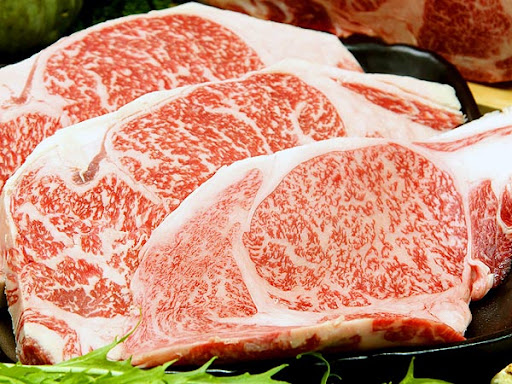

雫石牛

農家が長年試行錯誤を重ね、磨き抜かれた飼
養技術で育て上げられた黒毛和牛。その中で
も枝肉格付けランクＡ４・Ａ５の上物のみ厳
選されたのが雫石牛。
| 所在地 | 岩手郡雫石町板橋68-2 |
|---|---|
| 電話番号 | 019-692-5752 |
| 営業時間 | 【月〜土】 11:00～22:30(L.O.22:00) 【日/祝】 11:00～22:30 (L.O.22:00) |
[アクセス経路]
東北道盛岡ICから国道46号経由6km15分